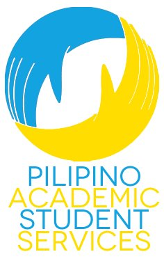
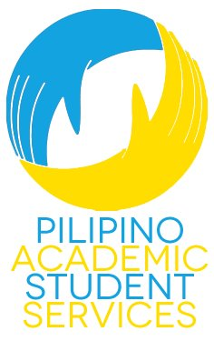

Transfer Coordinator

| Name: | Djenilin Mallari |
| Year: | 4th |
| What are you studying?: | Social Welfare Major |
| Hometown: | Hayward/Castro Valley, California |
| Contact Information: | pass.transfer@gmail.com |

| Name: | Djenilin Mallari |
| Year: | 4th |
| What are you studying?: | Social Welfare Major |
| Hometown: | Hayward/Castro Valley, California |
| Contact Information: | pass.transfer@gmail.com |
Tell Us About Your Position
As Transfer Coordinator, I'm dedicated to providing spaces for transfer students in the community to transition comfortably into their new life at UC Berkeley by providing resources and services, but also activities during which they can connect with other transfers as well.
In the Fall semester, I focus on academic and social retention through various events; Transfer Getaway, a day-long event for transfer students to get together and explore nearby San Francisco as a means of connecting with one another; social gatherings to mingle or partake in campus events; and, workshops to develop students professionally and connect them with campus resources that can help them succeed as students at Cal.
In the Spring semester, the overall retention of a student continues to be my focus as Transfer Coordinator. Workshops will continue to be held, in collaboration with other organizations that are resources to students as well. Also, alongside the bridges multicultural coalition, I organize and implement Transfer Weekend, a three-day event for newly-admitted transfer students to come and experience the beauty of UC Berkeley.
During both semesters, I work with the Outreach Co-Coordinators to bring in transfer students from different institutions. Some services we provide include personal statement reviews, help with the appeals process, and general questions from prospective transfer students.